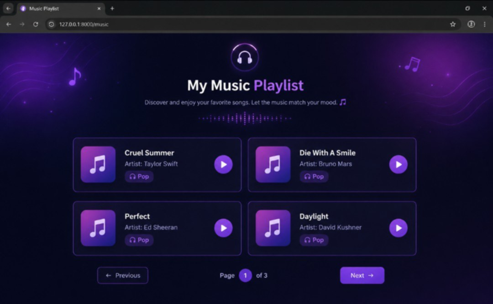
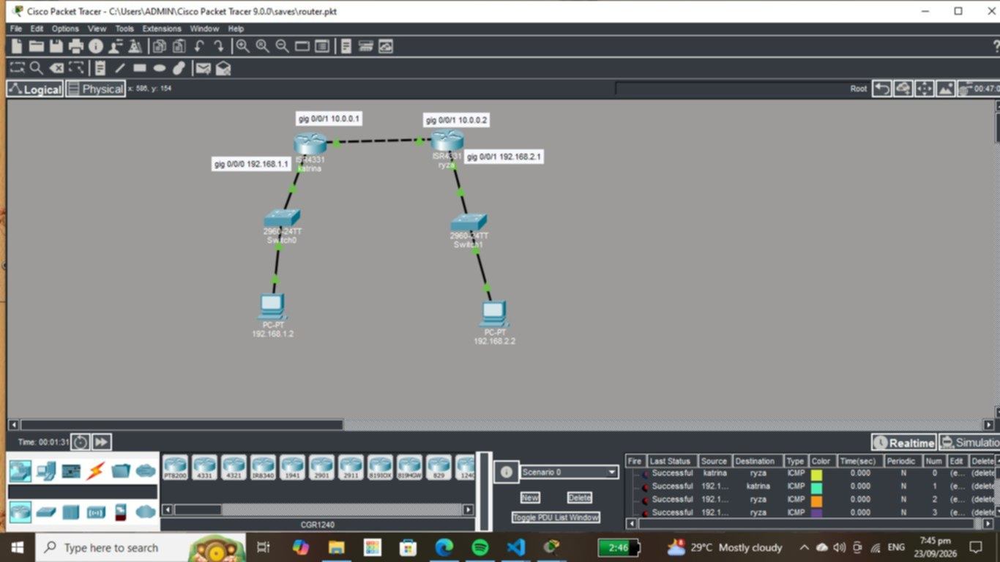

2026 to Present
Web Development Student
Learning Laravel, PHP, HTML, CSS, and basic web development.
I am a BSIT student interested in web development, programming, and creating useful digital projects. I am currently learning Laravel, PHP, HTML, CSS, and JavaScript.
Hi! I'm Katrina Laurio, a BSIT student who enjoys learning about web development and technology. I am passionate about creating websites, learning new programming skills, and improving my knowledge in information technology.
I am always eager to improve my skills and explore new ideas. My goal is to continue learning and build useful and creative projects using technology.

The webpage features a modern purple and neon aesthetic that displays a clean grid of four pop songs, including tracks by Taylor Swift and Bruno Mars. Each song card shows the title, artist, genre tag, and a play button. At the bottom of the screen, a pagination menu indicates that this is the first page of three, allowing users to browse through the rest of the collection using "Previous" and "Next" buttons.

A computer network project created using Cisco Packet Tracer, focusing on network devices, IP addressing, and connectivity.
2026 to Present
Learning Laravel, PHP, HTML, CSS, and basic web development.
2026
Created different school projects using web development technologies.
Present
Currently studying Information Technology and developing programming skills.
Want to talk about a project or an opportunity? Send me an email.
lauriokatrinamae@gmail.com